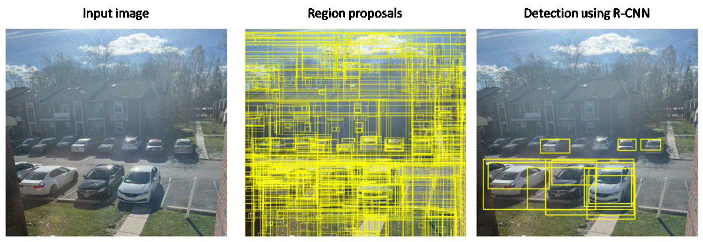

The key contribution of this project is a R-CNN model which can detect and locate vehicles in the image with bounding boxes. The R-CNN model is contains a pre-trained ResNet50 that accurately extracts relevant features and classifies a region proposal whether it contains a vehicle or not. The dataset is a combination of various image datasets like KITTI dataset and DAWN dataset because we wanted our model to detect vehicles in both clear as well as challenging weather conditions.
Contributors: Akash Mahajan and Yash Dave

When you download the ZIP file, make sure to open and read the README.html file.
Alternatively, you can read the following general instructions to install and use the Vehicle R-CNN
Vehicle_RCNN.zip folder on your computer.models/... contains all the released pre-trained TensorFlow models
modules/... contains all the necessary modules to re-train the R-CNN on a
new dataset1-loading-data.ipynb is the source code which can be modified to load and create dataset.2-building-the-model.ipynb is the source code to train a ResNet50 backbone and build the object detection model.Note: You can download our hybrid weather vehicle dataset or you can edit the code in
RCNN.py to train on your own ones. The code and all the files published in this project
are protected by MIT License and we highly encourage you to protect the author rights.
Republishing the code is highly discouraged. The contributors of this project do not show any conflict of interests.
Software Releases: GitHub repository or Zip (instructions inside)
Want to contribute? Jump to the GitHub repository and send me a request to become a open-source contributor to this project.